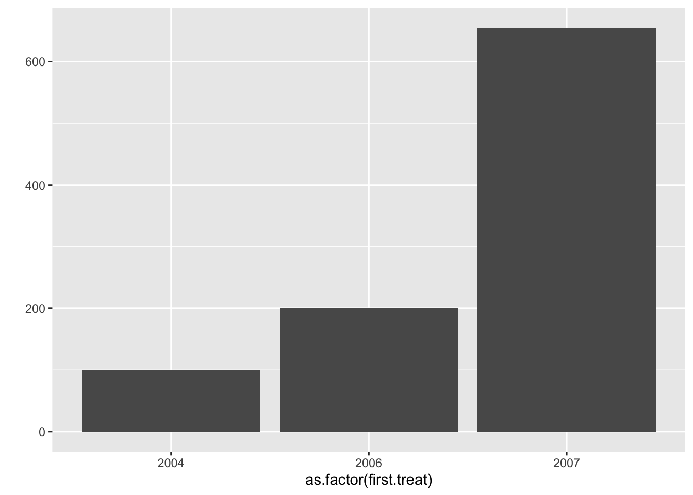
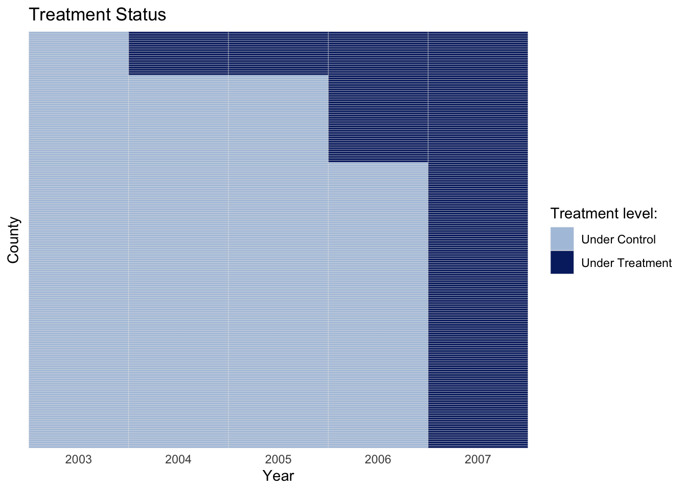
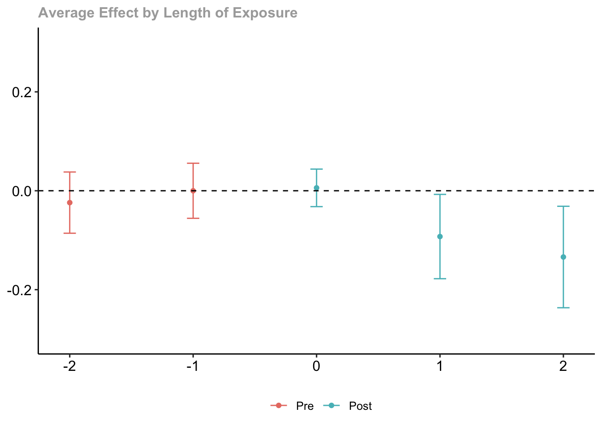
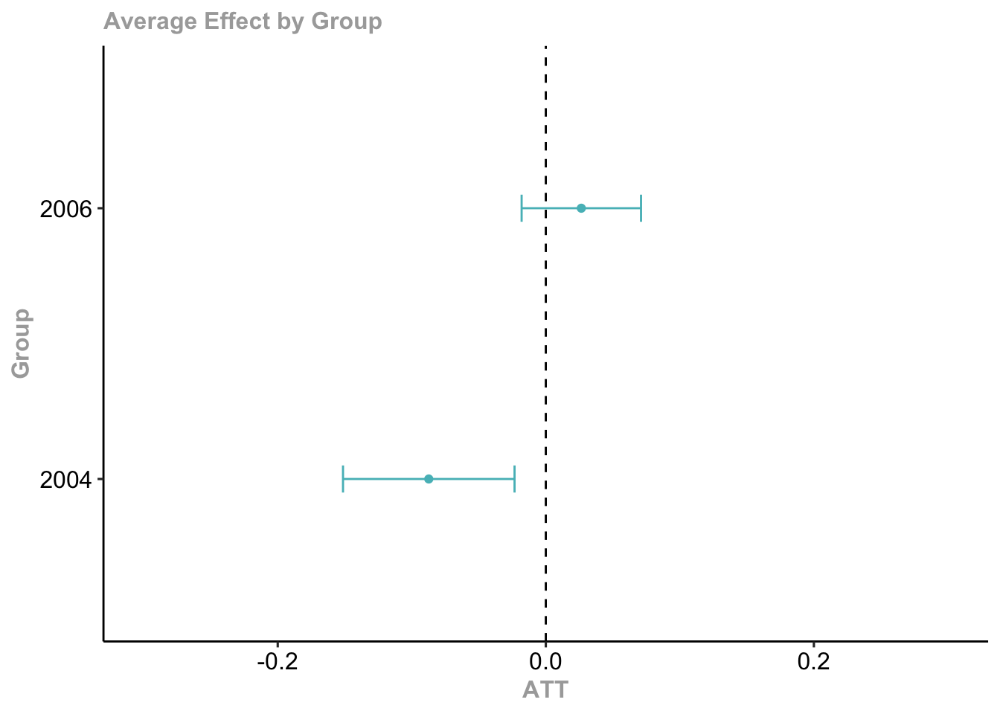
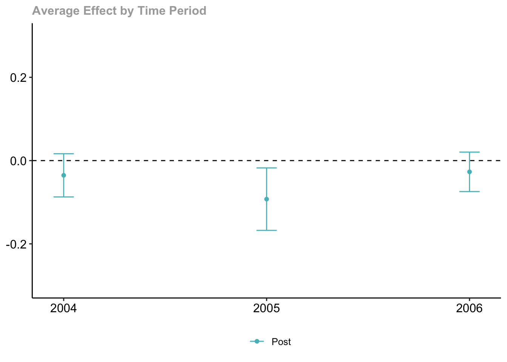
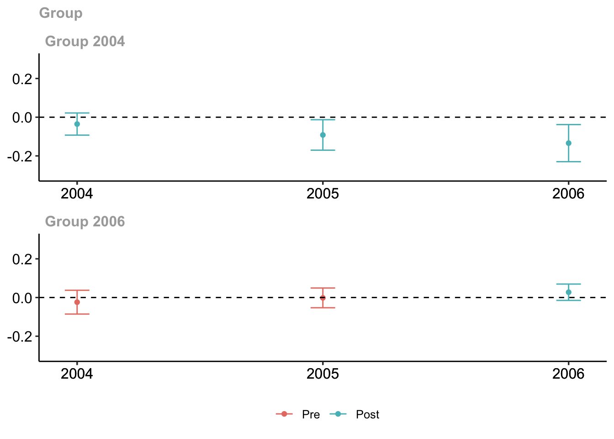

library(did)12 Ступенчатая разность разностей
12.1 Напоминание теории
https://bcallaway11.github.io/did/articles/index.html
https://github.com/naoki-egami/DIDdesign#Staggered-Adoption-Design
12.2 Пример
Используем данные о влиянии минимальной заработной платы на занятость молодежи из (Callaway, Sant’Anna, 2020). Это набор данных, который содержит уровень занятости подростков на уровне округа за 2003-2007 годы. Импортируем данные:
data(mpdta, package = 'did')
head(mpdta) year countyreal lpop lemp first.treat treat
866 2003 8001 5.896761 8.461469 2007 1
841 2004 8001 5.896761 8.336870 2007 1
842 2005 8001 5.896761 8.340217 2007 1
819 2006 8001 5.896761 8.378161 2007 1
827 2007 8001 5.896761 8.487352 2007 1
937 2003 8019 2.232377 4.997212 2007 1- год – год наблюдения
- countyreal – уникальный идентификатор округа
- lpop – логарифм населения округа (в тыс. чел.)
- lemp – логарифм занятости подростков в округе
- first.treat – год, когда штат, в котором расположен округ, повысил минимальную заработную плату. Он устанавливается равным 0 для округов, в которых минимальная заработная плата равна федеральной минимальной заработной плате за весь период.
- treat – будет ли конкретный округ повышать МРОТ в этом году или нет
12.2.1 Предварительный анализ данных
Предварительно посмотрим как устроены наши данные. В особенности на распределение наступления тритмента.
library(ggplot2)
library(dplyr)Посмотрим частоту введения тритмента в штатах по годам
qplot(data = mpdta, x = as.factor(first.treat))
qplot(data = subset(mpdta, treat == 1), x = as.factor(first.treat))
Посмотрим на тип матрицы тритмента:
library('panelView')mpdta <- mpdta %>%
subset(treat == 1) %>%
mutate(treatment = case_when(
year < first.treat ~ 0,
year >= first.treat ~ 1
))panelview(lemp ~ treatment,
data = mpdta,
index = c("countyreal","year"),
xlab = "Year", ylab = "County",
by.timing = TRUE, # сортировка штатов на графике в порядке наступления тритмента для ступенчатого вида
axis.lab = "time") +
theme_minimal() # минималистичная тема приятная взгляду 

Заметим, что воздействие началось в 2004 году, а в 2005 году никто не добавлялся в тритмент группу.
12.2.2 Оценка эффекта
12.2.2.1 group-time average treatment effects
Оценим средние эффекты воздействия в разрезе групп наступления тритмента по годам.
mw.attgt <- did::att_gt(yname = "lemp", # зависимая
gname = "first.treat", # период, когда наступает тритмент
idname = "countyreal",
tname = "year",
xformla = ~ 1,
control_group = "notyettreated", # кого считать контрольной группой
data = mpdta)Посмотрим саммари модели:
summary(mw.attgt)
Call:
did::att_gt(yname = "lemp", tname = "year", idname = "countyreal",
gname = "first.treat", xformla = ~1, data = mpdta, control_group = "notyettreated")
Reference: Callaway, Brantly and Pedro H.C. Sant'Anna. "Difference-in-Differences with Multiple Time Periods." Journal of Econometrics, Vol. 225, No. 2, pp. 200-230, 2021. <https://doi.org/10.1016/j.jeconom.2020.12.001>, <https://arxiv.org/abs/1803.09015>
Group-Time Average Treatment Effects:
Group Time ATT(g,t) Std. Error [95% Simult. Conf. Band]
2004 2004 -0.0354 0.0230 -0.0911 0.0203
2004 2005 -0.0926 0.0349 -0.1771 -0.0080 *
2004 2006 -0.1340 0.0418 -0.2353 -0.0326 *
2006 2004 -0.0240 0.0247 -0.0838 0.0359
2006 2005 0.0000 0.0234 -0.0568 0.0567
2006 2006 0.0265 0.0192 -0.0199 0.0729
---
Signif. codes: `*' confidence band does not cover 0
P-value for pre-test of parallel trends assumption: 0.60722
Control Group: Not Yet Treated, Anticipation Periods: 0
Estimation Method: Doubly Robust# Внизу тест Вальда на параллельность трендов -- совместная значимость коэффициентов до воздейтсвияНарисуем оценки:
did::ggdid(mw.attgt, ylim = c(-.3,.3)) # Установите ylim так, чтобы все графики имели одинаковый масштаб по оси YКрасные свечи – оценки эффекта до воздействия (претритмент), де факто претренды. Эффекта до наступления тритмента быть не должно.
Синие свечи – динамический эффект после воздействия (посттритмент) в разрезе календарных годов.
Видим негативное воздействие минимальной заработной платы на занятость среди молодежи в когорте наступления тритмента в 2004 году. Для вступивших в тритмент в 2006 году эффект незначим.
Неоднозначность полученных результатов позволяют предположить, что может быть полезно агрегировать средние эффекты воздействия в разрезе групп или периодов, чем мы займемся дальше.
Гораздо интереснее смотреть на агрегированные эффекты. Существует несколько способов агрегировать эффекты:
- Динамические – в разрезе количества периодов после наступления воздействия (смешиваются разные календарные года и когорты наступления тритмента)
- Групповые – в разрезе групп по году наступления тритмента (смешиваются разные календарные года)
- Календарные – в разрезе календарного года (смешиваются разные когорты наступления тритмента)
- Простой эффект – усредняем вообще всё в одно число (смешиваются разные календарные года и когорты наступления тритмента)
12.2.2.2 Динамические эффекты (dynamic treatment effects)
Динамический эффект – в разрезе количества периодов после наступления воздействия (смешиваются разные календарные года и когорты наступления тритмента). По оси икс t-g (год минус тритмент).
mw.dyn <- did::aggte(mw.attgt, type = "dynamic")
summary(mw.dyn)
Call:
did::aggte(MP = mw.attgt, type = "dynamic")
Reference: Callaway, Brantly and Pedro H.C. Sant'Anna. "Difference-in-Differences with Multiple Time Periods." Journal of Econometrics, Vol. 225, No. 2, pp. 200-230, 2021. <https://doi.org/10.1016/j.jeconom.2020.12.001>, <https://arxiv.org/abs/1803.09015>
Overall summary of ATT's based on event-study/dynamic aggregation:
ATT Std. Error [ 95% Conf. Int.]
-0.0736 0.0268 -0.126 -0.0211 *
Dynamic Effects:
Event time Estimate Std. Error [95% Simult. Conf. Band]
-2 -0.0240 0.0254 -0.0859 0.0379
-1 0.0000 0.0228 -0.0557 0.0557
0 0.0059 0.0155 -0.0321 0.0438
1 -0.0926 0.0349 -0.1778 -0.0074 *
2 -0.1340 0.0420 -0.2365 -0.0314 *
---
Signif. codes: `*' confidence band does not cover 0
Control Group: Not Yet Treated, Anticipation Periods: 0
Estimation Method: Doubly Robustdid::ggdid(mw.dyn, ylim = c(-.3,.3))
12.2.2.3 Групповые эффекты (group treatment effects)
Групповые – в разрезе групп по году наступления тритмента (смешиваются разные календарные года)
mw.group <- did::aggte(mw.attgt, type = "group")
summary(mw.group)
Call:
did::aggte(MP = mw.attgt, type = "group")
Reference: Callaway, Brantly and Pedro H.C. Sant'Anna. "Difference-in-Differences with Multiple Time Periods." Journal of Econometrics, Vol. 225, No. 2, pp. 200-230, 2021. <https://doi.org/10.1016/j.jeconom.2020.12.001>, <https://arxiv.org/abs/1803.09015>
Overall summary of ATT's based on group/cohort aggregation:
ATT Std. Error [ 95% Conf. Int.]
-0.0114 0.0162 -0.0431 0.0203
Group Effects:
Group Estimate Std. Error [95% Simult. Conf. Band]
2004 -0.0873 0.0295 -0.1513 -0.0233 *
2006 0.0265 0.0205 -0.0180 0.0710
---
Signif. codes: `*' confidence band does not cover 0
Control Group: Not Yet Treated, Anticipation Periods: 0
Estimation Method: Doubly Robustdid::ggdid(mw.group, ylim = c(-.3,.3))
12.2.2.4 Календарные эффекты (calendar treatment effects)
Календарные – в разрезе календарного года (смешиваются разные когорты наступления тритмента)
mw.calendar <- did::aggte(mw.attgt, type = "calendar")
summary(mw.calendar)
Call:
did::aggte(MP = mw.attgt, type = "calendar")
Reference: Callaway, Brantly and Pedro H.C. Sant'Anna. "Difference-in-Differences with Multiple Time Periods." Journal of Econometrics, Vol. 225, No. 2, pp. 200-230, 2021. <https://doi.org/10.1016/j.jeconom.2020.12.001>, <https://arxiv.org/abs/1803.09015>
Overall summary of ATT's based on calendar time aggregation:
ATT Std. Error [ 95% Conf. Int.]
-0.0517 0.0213 -0.0935 -0.0099 *
Time Effects:
Time Estimate Std. Error [95% Simult. Conf. Band]
2004 -0.0354 0.0235 -0.0872 0.0164
2005 -0.0926 0.0340 -0.1676 -0.0175 *
2006 -0.0270 0.0215 -0.0744 0.0204
---
Signif. codes: `*' confidence band does not cover 0
Control Group: Not Yet Treated, Anticipation Periods: 0
Estimation Method: Doubly Robustdid::ggdid(mw.calendar, ylim = c(-.3,.3))
12.2.2.5 Простой эффект (simple treatment effects)
Простой эффект – усредняем вообще всё в одно число (смешиваются разные календарные года и когорты наступления тритмента)
mw.simple <- did::aggte(mw.attgt, type = "simple")
summary(mw.simple)
Call:
did::aggte(MP = mw.attgt, type = "simple")
Reference: Callaway, Brantly and Pedro H.C. Sant'Anna. "Difference-in-Differences with Multiple Time Periods." Journal of Econometrics, Vol. 225, No. 2, pp. 200-230, 2021. <https://doi.org/10.1016/j.jeconom.2020.12.001>, <https://arxiv.org/abs/1803.09015>
ATT Std. Error [ 95% Conf. Int.]
-0.0418 0.0208 -0.0825 -0.001 *
---
Signif. codes: `*' confidence band does not cover 0
Control Group: Not Yet Treated, Anticipation Periods: 0
Estimation Method: Doubly Robust# графика нет, нет смысла рисовать одну цифру 12.2.2.6 Эффект с контрольными переменными (treatment effects with controls)
Можно делать все то же самое, но с добавлением контрольных переменных.
mw.attgt2 <- did::att_gt(yname = "lemp",
gname = "first.treat",
idname = "countyreal",
tname = "year",
xformla = ~ lpop,
control_group = "notyettreated",
data = mpdta)
summary(mw.attgt2)
Call:
did::att_gt(yname = "lemp", tname = "year", idname = "countyreal",
gname = "first.treat", xformla = ~lpop, data = mpdta, control_group = "notyettreated")
Reference: Callaway, Brantly and Pedro H.C. Sant'Anna. "Difference-in-Differences with Multiple Time Periods." Journal of Econometrics, Vol. 225, No. 2, pp. 200-230, 2021. <https://doi.org/10.1016/j.jeconom.2020.12.001>, <https://arxiv.org/abs/1803.09015>
Group-Time Average Treatment Effects:
Group Time ATT(g,t) Std. Error [95% Simult. Conf. Band]
2004 2004 -0.0354 0.0231 -0.0926 0.0218
2004 2005 -0.0918 0.0318 -0.1705 -0.0131 *
2004 2006 -0.1340 0.0387 -0.2299 -0.0382 *
2006 2004 -0.0241 0.0248 -0.0855 0.0374
2006 2005 -0.0019 0.0206 -0.0529 0.0492
2006 2006 0.0274 0.0171 -0.0149 0.0696
---
Signif. codes: `*' confidence band does not cover 0
P-value for pre-test of parallel trends assumption: 0.57909
Control Group: Not Yet Treated, Anticipation Periods: 0
Estimation Method: Doubly Robustdid::ggdid(mw.attgt2, ylim = c(-.3,.3))